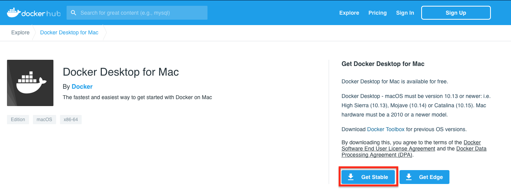
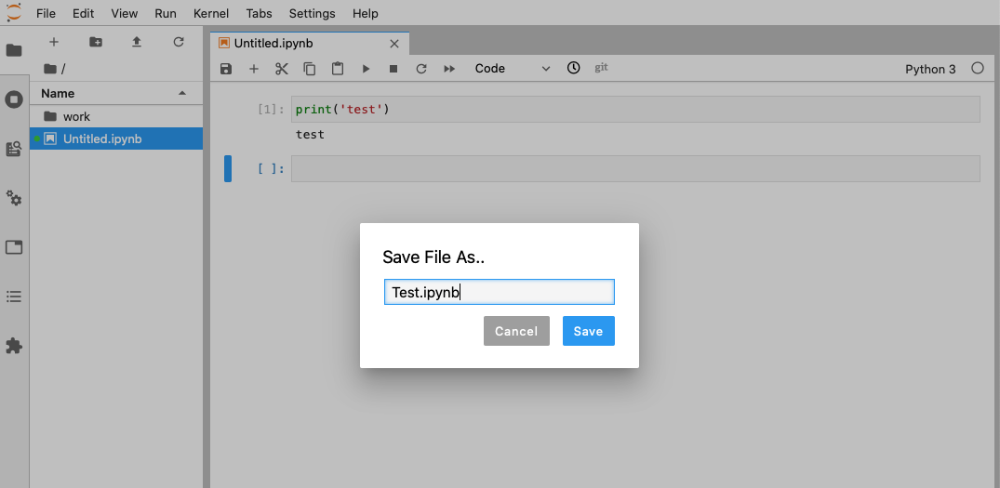
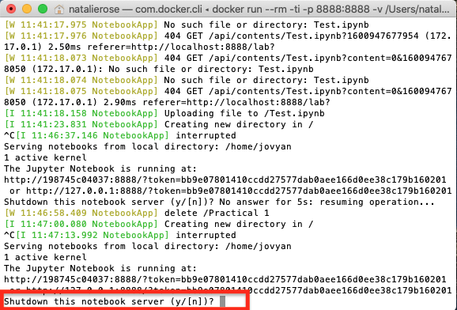

MacOS Installation {#mac}
0.1 Installing Python
Requirements
- A stable internet connection
- ~10GB of space on your hard drive
- MacOS version 10.13 or newer i.e. High Sierra, Mojave or Catalina. If you are unsure what version you are running click on the apple icon in the top left of the screen and then About this Mac.
- Mac hardware must be a 2010 model or newer
Installation steps
- Go to the dockerhub website.
- Ensure you meet the criteria for download (it is the same as stated above) and then select ‘Get Stable’ button.

- This will then download to your machine but may take some time. Once finished, to access this download go to Finder > Downloads > Docker.dmg and double click.

- You should then be prompted to drag and drop this application into the applications folder like so:
 You may get further windows asking for access to the program. To these you can click Open > Ok > enter your account password and click Install helper
You may get further windows asking for access to the program. To these you can click Open > Ok > enter your account password and click Install helper
- After you have done this, the whale icon should now show in your taskbar:

You have successfully downloaded Docker!
Next steps: Using Docker
Using Docker
Now we have Docker installed we can use it to access Python and all the associated packages we need for the practicals
Installing the GDS environment
- Access your terminal: Launchpad > Other > Terminal
- In a fresh line in the terminal type the following to install the GDS environment container:
docker pull darribas/gds:5.0

- This should now prompt a long download process that looks a bit like this:
 Dont be alarmed if it seems to take a very long time.
Dont be alarmed if it seems to take a very long time.
You will know this has completed when each line says ‘Pull complete’ and the new line gives your machine name followed by a $ sign.
0.2 Running Python
Running the container
- In the new terminal line type the following command to run the container:
docker run --rm -ti -p 8888:8888 -v ${PWD}:/home/jovyan/work darribas/gds:5.0

You have now started a Python session.
NOTE: It is important that you do not close the terminal window until you are finished in this Python session
To access this session go to your chosen web browser (e.g. Safari/Chrome) and type:
localhost:8888into the search barThe page that loads will prompt you for a password. This password can be found in the text in the terminal following the last command you ran (step 9). A long series of numbers and letters will be preceded by
?token=. Copy this long series of characters and paste into the password box in your browser.


- Now you are in Jupyter Lab you can open up a Python 3 notebook

Using Jupyter Notebook
- This notebook is where you will run your code. Each shaded box is called a kernel. To test this out you can type
print('test')into one of these kernels. To run the code use the shortcutCtrl + Enter.

- You can save your notebook using File > Save notebook as 
- You can create new folders to organise your work

- And you can access other files on your machine through the ‘Work’ folder in the File Browser. From here you can navigate to your Documents and designated folder for this module


Ending your session
Once you have finished in your Jupyter session and have saved all your work, you can end the session from the terminal.
Using Ctrl + C will prompt a y/n option. Either type y or Ctrl + C again to end the session.

You can now safely shut the terminal window.
Next time you go to run a Jupyter Notebook you will not need to repeat the whole process as you have already installed Docker and the GDS environment. Instead you can start from Running the container and carry on from there.